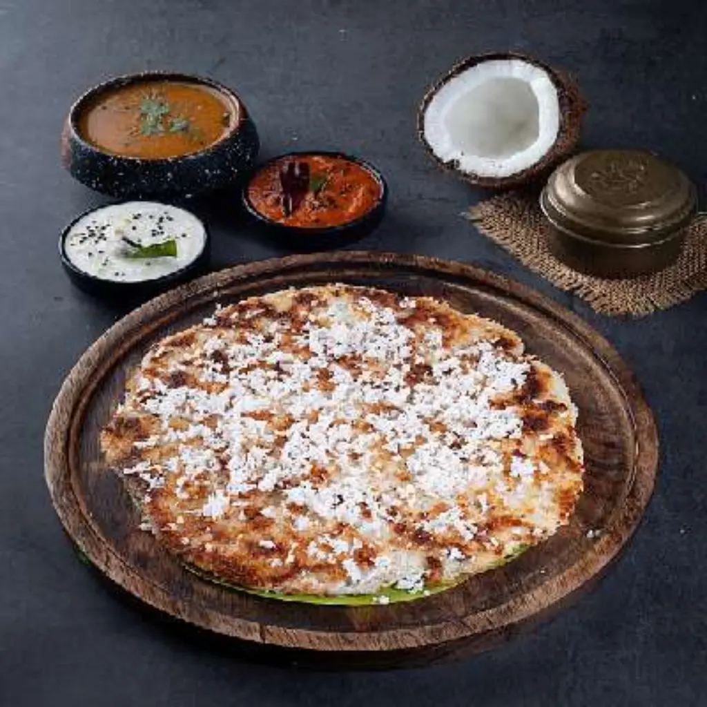
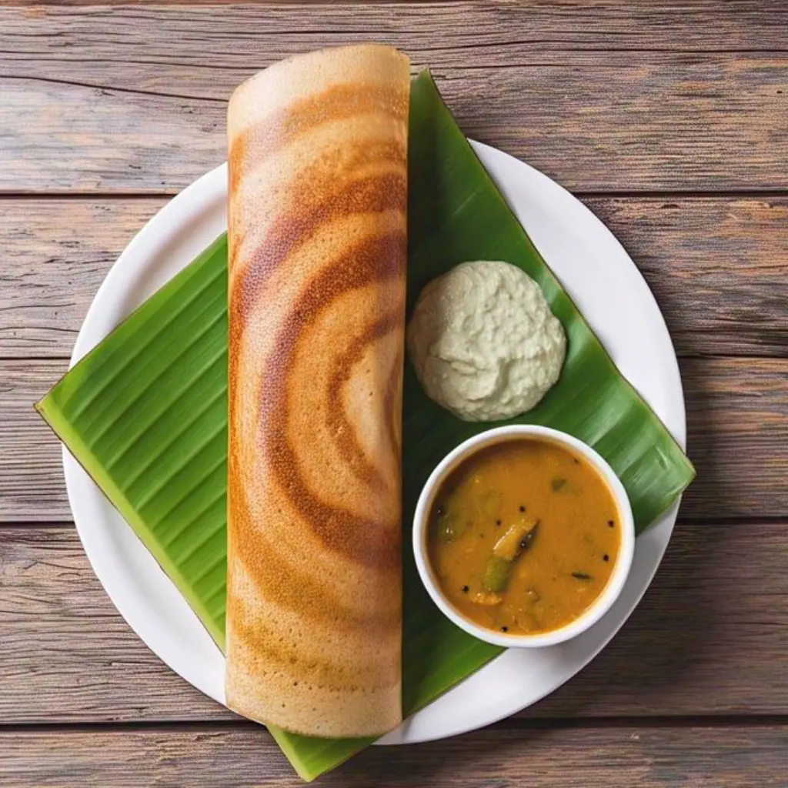
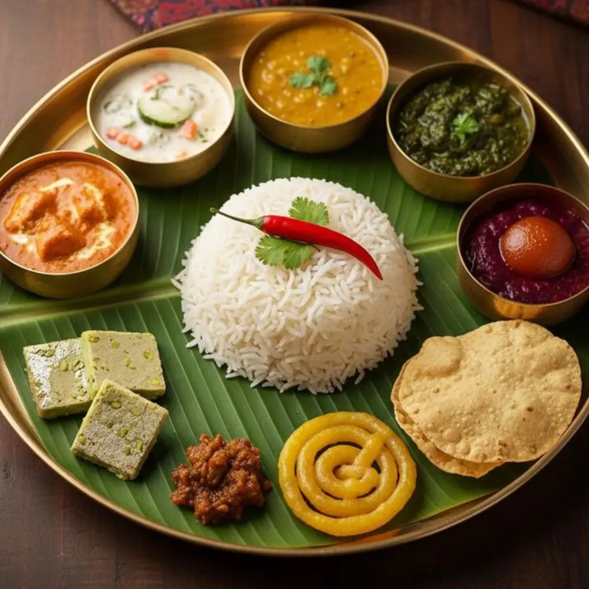

Our Story
Shri Krishna Bhavan is a family-run South Indian restaurant in downtown Bellevue. We opened to share the dishes we grew up with — the kind of food that gets cooked fresh on a hot tawa, eaten with your hands from a banana-leaf thali, and remembered for years.
Our menu is built around the breakfast foods, dosas, uttapams, and thalis that are the backbone of South Indian home cooking. Everything is prepared to order: the dosa batter is fermented overnight, the sambar simmers with whole spices, and every chutney is ground the morning it's served.
A Taste of South India
South Indian cuisine is famously varied — every state, every district, almost every family has its own way of making a masala dosa. Our menu pulls favorites from across the region: the crispy paper roast from Chennai, the tangy gongura dosa from Andhra, the ghee-rich bisi bele bhath from Karnataka, and the breakfast classics idly and medu vada that are loved everywhere.



Come Visit
We're easy to find on Bellevue Way, with parking on-site and a waitlist that lets you join from your phone before you arrive. Whether it's a weekend breakfast of idly and coffee, a quick dosa at lunch, or a full thali dinner with the family, we hope you'll feel at home when you sit down.